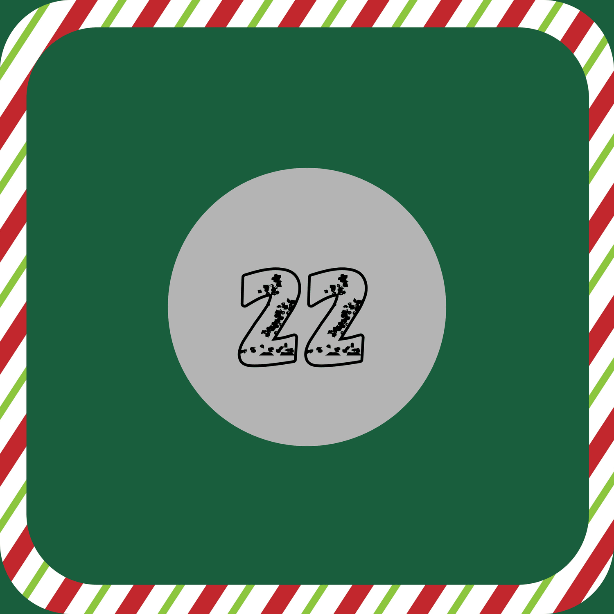

Yo, välkomna till dagens lucka! Idag ska vi snacka om ett ord som luktar tunga grabbar och hårda tider. Vi pratar Gutenberg i bakfickan, svettiga högstadiediscon, krossat glas överallt och bilar som bränner iväg i natten. Fullt ös, ren action. Men frågan är – lever dagens version verkligen upp till ryktet, eller är det bara snack?